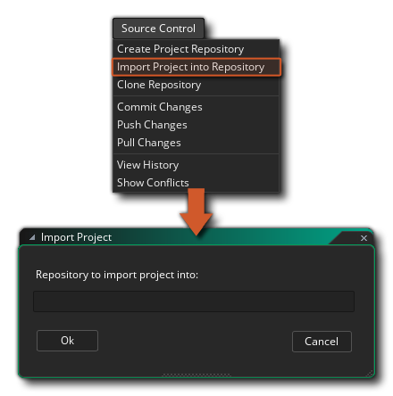
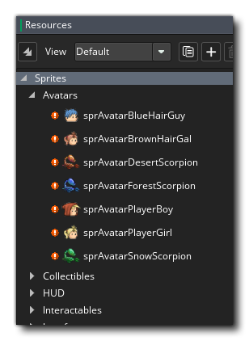
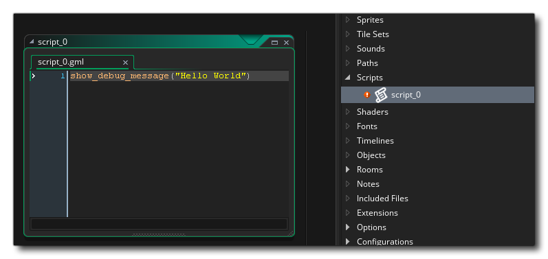
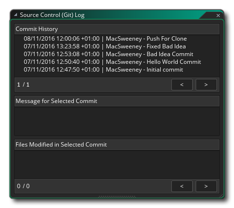
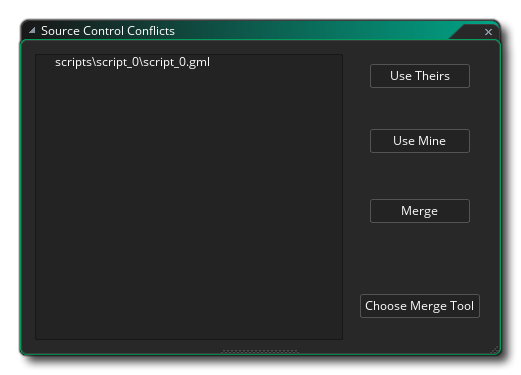

Source Control Management (SCM) est le nom donné à la méthode de travail avec les sous-versions ou les sauvegardes de vos projets via un référentiel et une source locale. En gros, une solution SCM est un progiciel indépendant qui contrôle tous les aspects de la maintenance, de la modification et de la comparaison des versions de votre projet au fur et à mesure de votre travail. Ceci est particulièrement utile pour ceux qui travaillent en équipe et doivent pouvoir contrôler qui fait quoi et ne pas s'inquiéter de la perte de données ou de modifications qui pourraient devoir être annulées ultérieurement, mais les utilisateurs peuvent bénéficier de cette solution puissante mais flexible. système aussi.
Différents outils SCM sont disponibles, et GameMaker Studio 2 est livré avec un plugin Git inclus qui peut être utilisé immédiatement. Vous n'avez pas besoin d'installer de paquet supplémentaire car il est fourni avec le plugin lui-même. Ci-dessous, nous donnons un petit tutoriel sur la façon de configurer ce plugin et d'utiliser les outils SCM avec un projet. Au bas de la page, nous donnons également un aperçu du menu contextuel du SCM, qui est également référencé dans les sections du didacticiel.
Tout d'abord, nous devons configurer une identité pour que Git puisse valider en tant que, ce qui signifie que nous devons aller à la section Plug-ins - Contrôle de source (Git) des Préférences et ajouter vos informations d'authentification.
Cette identité d'authentification sera utilisée pour tous les projets futurs. GameMaker Studio 2 vous propose deux manières différentes de la configurer:
- Nom d'utilisateur et mot de passe: Cliquez sur le bouton "Ajouter un nouvel utilisateur / authentification par passe" pour afficher la fenêtre suivante dans laquelle vous pouvez saisir l' URL du référentiel, le nom d' utilisateur et le mot de passe:
Si vous souhaitez que cela n'affecte qu'un référentiel spécifique, placez l'URL du référentiel dans le champ supérieur. Cependant, si vous voulez une authentification à l’échelle du domaine (": bitbucket.org " ou " github.com ") puis placez simplement le domaine et rien d’autre. Lorsque quelque chose doit vérifier l’authentification, il recherche d’abord une correspondance de référentiel spécifique, puis une correspondance de domaine. Cela vous permettra d’avoir une authentification par défaut pour un domaine et de remplacer avec des détails spécifiques pour certains référentiels plus tard.
REMARQUE: Si vous utilisez un référentiel externe, vous devez alors utiliser le nom d'utilisateur et le mot de passe associés au compte configuré pour ce référentiel. Toutefois, si vous souhaitez utiliser un référentiel local, vous pouvez utiliser n'importe quel nom d'utilisateur et mot de passe.- Paires de clés SSH: Cliquez sur "Ajouter une nouvelle authentification de paire de clés SSH" pour afficher la fenêtre suivante dans laquelle vous pouvez saisir l' URL et le mot de passe du référentiel avant d'indiquer les chemins d'accès aux fichiers de clé publique et de clé privée requis:
Comme pour les authentifications Nom d'utilisateur / Mot de passe, vous pouvez avoir des authentifications spécifiques au domaine et au référentiel lors de l'utilisation de paires de clés SSH. Si vous avez déjà généré une paire de clés SSH, vous pouvez définir les chemins d'accès ici, ainsi que tout mot de passe requis pour y accéder. Notez que si vous avez besoin d’un accès rapide à la clé publique, le bouton Copier
va automatiquement copier le contenu dans le presse-papiers pour vous. Si vous ne possédez pas déjà une paire de clés SSH, cliquez sur le bouton Créer une clé. Une boîte de dialogue indiquant où placer la clé privée apparaîtra. La clé publique sera créée à côté, ce qui remplira les chemins d'accès à la clé privée. clés publique et privée automatiquement pour vous.
Ces paramètres seront désormais utilisés pour communiquer avec le référentiel (IE: Git Hub, Bit Bucket, etc.) lors du traitement des demandes de clonage, de transfert et d'extraction. Cependant, vous devez toujours configurer les options par projet, ce qui peut être fait en ouvrant les Options principales et en cliquant sur l'option Activer le contrôle de la source. Cela activera le SCM pour le projet en cours.Une fois que vous avez activé le contrôle de source (et que vous l'avez appliqué ou fermé les options du jeu), un nouveau menu contextuel apparaît en haut de l'EDI avec l'option suivante (que nous explorerons dans les autres sections de cette page):
REMARQUE: Si vous devez modifier à nouveau les informations d'authentification, double-cliquez simplement sur l'entrée pour que la fenêtre d'informations s'ouvre et que vous puissiez la modifier, mais vous ne pourrez pas renommer l'URL. Si vous devez modifier l'URL, vous devrez supprimer les détails de l'authentification et ajouter à nouveau. Pour supprimer les détails de l'authentification, cliquez sur le bouton de fermeture situé à gauche de la ligne dans la fenêtre principale Préférences.
Vous devez maintenant lier l' GameMaker Studio 2 à un référentiel:
- Créer un référentiel de projet
- Pousser le projet actuel dans un référentiel externe
- Cloner un référentiel existant
Dans le premier cas, lors de la création d'un référentiel de projet, cela créera un référentiel Git directement à l'emplacement de votre projet. En langage Git, il s'agit d'un "référentiel non-nu", donc Push / Pull n'a aucun sens dans ce cas, mais vous pouvez toujours valider et suivre les modifications du projet, ainsi qu'annuler les modifications et les révisions si nécessaire. Pour ce faire, il vous suffit de cliquer sur Contrôle de la source > Créer un référentiel de projet dans le menu principal.
Cependant, vous avez peut-être déjà un projet existant et souhaitez le placer dans un référentiel externe pour le suivi et le partage au sein de votre équipe. Cela nécessite qu'un référentiel externe ait déjà été configuré, ainsi que le nom d'utilisateur et le mot de passe corrects définis dans vos préférences d'identité pour pouvoir y accéder. Si tout est prêt, cliquez sur Contrôle de la source > Importer le projet dans le référentiel, puis remplissez l'URL. 
Enfin, en tant que fonction pratique, vous pouvez cloner un référentiel externe via l'EDI. Encore une fois, vous aurez besoin du nom d'utilisateur et du mot de passe du référentiel auquel vous allez vous connecter dans vos préférences d'identité. Il vous suffira ensuite de cliquer sur Contrôle de la source > Référentiel de clonage. Remplissez l'URL (en utilisant la variante HTTPS plutôt que SSH) et dites où vous le souhaitez.
Une fois le clone terminé, un navigateur de fichiers s’ouvre automatiquement pour vous permettre d’ouvrir le projet si vous le souhaitez.
Au fur et à mesure que vous travaillez sur votre projet, vous allez naturellement créer des sprites, éditer des scripts, supprimer des chronologies et tout ce qui est nécessaire au fur et à mesure de l'évolution de votre projet. Ce sont toutes des actions que vous voudrez peut-être suivre et récupérer en cas de problème. C’est la raison principale pour utiliser le contrôle de la source - afin que tout accident puisse être annulé - et nous vous expliquerons rapidement le flux de travail de base dès le début afin que vous compreniez comment cela fonctionne.
En commençant par le début, créez un nouveau projet GML, puis activez le contrôle de source à l'aide des options principales. Cela nous donne accès au menu de contrôle de la source en haut, nous allons donc immédiatement créer un référentiel de projet. Si vous regardez les ressources de la salle, vous pouvez voir que la salle par défaut a gagné une exclamation rouge. , ce qui signifie qu'il a été modifié depuis son dernier état. Si nous avions d'autres ressources dans le projet, vous verriez qu'elles ont toutes la même icône, comme le montre l'image ci-dessous: 
Nous avons maintenant la possibilité de valider le projet vide tel quel ou de le placer dans un état de base. Pour l'instant, nous ferons notre premier commit. Cliquez donc sur Contrôle de la source > Valider les modifications. Nous allons maintenant avoir une fenêtre divisée en trois zones:
- Changements par étapes - Ceci représente les changements qui seront appliqués à la source. Ce sera probablement vide, mais cela peut indiquer un changement dans les options principales, ce qui est correct.
- Unstaged Changes - Cela montre les fichiers qui ont été modifiés, mais nous n’avons pas dit à Git que nous voulons les valider, ils sont "en attente".
- Message de validation - Il s'agit d'une note que nous pouvons ajouter pour expliquer les modifications.
Pour l'instant, cliquez sur le bouton Tous les stages, car nous voulons valider toutes les modifications, puis tapez quelque chose comme "First Commit!". dans le message de validation et cliquez sur Valider. Toutes nos ressources devraient maintenant avoir une coche verte
, ce qui signifie qu'il n'y a pas de modifications trouvées.
Il est à noter que lorsque vous travaillez dans cette fenêtre, les différents messages Staged et Unstaged seront précédés d’un symbole. Le symbole utilisé varie en fonction de l'opération et du fichier, les éléments suivants étant utilisés:
- [...] - Changement par étapes (était auparavant [A] )
- [+] - Nouvellement ajouté
- [->] - renommé / déplacé
- [-] - enlevé
- [M] - Modifications non mises en place
- [?] - Fichier non suivi
- [!] - Fichier manquant
Notre processus de travail peut maintenant commencer et nous pouvons commencer à construire notre projet et à enregistrer et valider les modifications, comme nous l'avons fait dans les paragraphes ci-dessus.
Après avoir travaillé pendant un certain temps, vous voudrez peut-être vérifier et voir ce que vous avez commis à un moment donné, et pour cela, vous voudrez ouvrir l' historique de validation. Pour ouvrir la fenêtre d'historique, il suffit d'aller dans Contrôle de la source > Afficher l'historique, ce qui ouvre une autre fenêtre avec trois volets:
Le volet supérieur décrit les validations, le volet du milieu décrit le commentaire donné à la validation sélectionnée et le volet inférieur décrit les fichiers qui ont été modifiés dans cette validation. Notez que si vous avez configuré un outil de différenciation, double-cliquez sur l'un des fichiers de cette fenêtre pour ouvrir l'outil de différenciation et vous pourrez voir les modifications entre les fichiers.
Ci-dessus, vous avez vu comment créer un référentiel et y appliquer des modifications, mais que se passe-t-il si vous commettez une erreur et souhaitez revenir à une validation précédente? Faisons une erreur délibérée et voyons comment nous pouvons y remédier alors...
Tout d’abord, créez une nouvelle ressource - dans cet exemple, nous allons créer une ressource de script - et vous ne verrez initialement aucune icône d’état car, pour le contrôle de source, il n’existe pas encore. Dans la ressource de script, ajoutez une simple ligne de code, telle que:
show_debug_message("Hello World");
Si vous fermez maintenant l'éditeur de code, le script sera enregistré et l'icône du fichier modifié apparaîtra à côté de lui dans l'arborescence des ressources. Maintenant, ouvrez la fenêtre de validation et vous verrez qu'il y a quatre changements programmés, à mesure que de nouvelles ressources sont ajoutées automatiquement:
Les changements mis en scène seront:
- le fichier de projet.yyp
- un fichier de vue
- le script GML lui-même
- le fichier.yy le référençant
Vous devez taper un message de validation, puis cliquer sur le bouton Valider, comme expliqué précédemment. Maintenant, revenons à notre script et changeons la ligne de code en (par exemple):
show_debug_message("Hello World, how are you?");
Lorsque nous fermons l'éditeur de code, une icône rouge apparaît à nouveau à côté du script, mais nous nous sommes rendu compte que nous avions commis une erreur avec notre code et nous souhaitions revenir à une version précédente pour le corriger (vous pouvez évidemment ouvrez le script et corrigez-le facilement, car l'exemple est très simple, mais dans les grands projets, l'approche n'est généralement pas réalisable). Ce que nous devons faire, c'est inverser nos changements.
Pour annuler une modification, nous devons d'abord ouvrir à nouveau la fenêtre de validation, nous allons donc dans Contrôle source > Valider les modifications à nouveau. Notre fichier modifié sera à nouveau prêt à être validé, mais comme ce n’est pas ce que nous souhaitons, nous cliquons sur le bouton Désactiver tout pour le sortir de la zone de préparation.
Si nous faisons maintenant un clic droit
sur le fichier que nous avons changé, nous aurons un menu contextuel avec une option pour Revert Path:
Lorsque vous sélectionnez cette option, vous restaurez les fichiers dans leur état précédent.
IMPORTANT! Lorsque vous revenez sur votre ordinateur, vous recevez un message vous demandant de recharger ou d'enregistrer le projet en cours car le vérificateur de fichiers détecte les modifications sur le disque:Vous devez appuyer sur Recharger et ne pas enregistrer, car l'enregistrement permettra d'économiser de la mémoire plutôt que de recharger les fichiers restitués.
C’est très bien lorsque vous éditez quelque chose et que vous souhaitez revenir sans avoir déjà effectué de validation, mais qu’en est-il lorsque vous avez validé une ou plusieurs modifications et que vous souhaitez revenir à une validation précédente? Eh bien, éditons à nouveau notre script pour dire:show_debug_message("This is a bad idea");
Maintenant, nous l’engageons comme avant pour le placer sous contrôle de source. C'était donc une mauvaise idée et nous voulons revenir en arrière. Cela signifie que nous devons commencer par ouvrir à nouveau la fenêtre Contrôle de code source > Afficher l'historique. Nous verrons maintenant une liste de tous les validations précédentes dans cette fenêtre, en commençant par la validation initiale, la validation pour le script, puis la validation pour le script que nous avons modifié en tant que "mauvaise idée":
Nous avons maintenant deux choix. Nous pouvons revenir à une révision complète - ce qui rétablira tous les fichiers qui ont été modifiés pour ceux du commit choisi - ou nous pouvons inverser un chemin - ce qui reviendra simplement à un seul fichier. Faisons la première option pour commencer avec:
- Clic-droit
- Sélectionnez Revenir à cette révision, puis choisissez Recharger dans le message d'avertissement.
Vous devriez voir que le script a maintenant une icône d'état rouge et si nous l'ouvrons, nous aurons ce qui suit: 
Nous pouvons ensuite nous engager sur le projet et nous serons à nouveau là où nous étions. Cependant, nous pouvons également annuler cette action pour le fichier et obtenir notre "mauvaise idée" commettre en procédant comme suit:
- Ouvrez la fenêtre Commit Changes.
- Décompressez le script avec le code "Hello World".
- Clic-droit
Nous sommes de retour pour avoir à nouveau le fichier erroné dans le projet! Eh bien, nous pouvons saisir cette occasion pour rétablir uniquement ce chemin de fichier au lieu de tout redéfinir dans une révision précédente. Pour cela nous devons faire ce qui suit:
- Ouvrez la fenêtre Afficher l'historique.
- Cliquez sur le deuxième commit (le commit "Hello World").
- Clic-droit
Nous devrions être de retour pour avoir notre code "Hello World" et nous pouvons ensuite faire un nouveau commit pour mettre à jour le contrôle de source à nouveau avec le fichier corrigé.
Lorsque votre projet est stocké dans un référentiel externe, vous devez vous rappeler d’ appliquer vos modifications et d’en extraire de nouvelles. La raison en est que lorsque vous validez, vous stockez vos modifications localement, ce qui vous permet de travailler en dehors d'une connexion Internet et de synchroniser lorsque vous êtes prêt. Vous pouvez également synchroniser vos modifications dans le référentiel distant. Extraire les modifications signifie que vous souhaitez extraire toutes les modifications apportées par d'autres du référentiel distant vers votre référentiel local. Cependant, cela signifie parfois que des personnes peuvent modifier les mêmes fichiers, ce qui crée un conflit de fusion. Vous devez savoir comment gérer ces conflits afin que nous puissions en créer délibérément un, puis vous montrer comment le résoudre.
REMARQUE: il n'est pas recommandé de partager un référentiel de projet local (même via un service de synchronisation de fichiers tel que Dropbox), car les validations sont généralement écrites directement dans celui-ci. Vous bénéficiez donc d'une très faible protection contre les conflits.
Pour générer notre conflit, nous devons d’abord disposer de deux référentiels locaux, un pour le référentiel maître et un pour notre copie. Pour créer cela, nous devons cloner le référentiel, en procédant comme suit:
- Allez au contrôle de la source > référentiel de clonage.
- Dans le champ URL, tapez le chemin du projet que nous avons configuré dans le guide Reverting Files ci-dessus (par défaut, ce sera D:\Users\<Username>\Documents\GameMakerStudio2\<ProjectName> ).
- Vous devez ensuite définir un chemin sur lequel cloner:
Lorsque vous cliquez sur le bouton "OK", l'avertissement suivant concernant le clonage d'un référentiel "non-nu" s'affiche:
Vous pouvez cliquer sur "OK" ici encore.
- Vous allez maintenant avoir accès à un explorateur de répertoires pour créer un référentiel de proxy "nu" (il s'agit d'un référentiel que vous pouvez stocker en toute sécurité sur Dropbox, par exemple). Accédez à l'emplacement où vous souhaitez créer ce référentiel de proxy et sélectionnez (ou créez) le dossier à utiliser.
Une fois cette opération effectuée, GameMaker Studio 2 transmettra votre projet d'origine au proxy, en extraira un nouveau dans le chemin que vous avez défini dans la fenêtre Référentiel de clonage, puis ouvrira automatiquement un navigateur de fichiers afin de vous permettre d'ouvrir le projet stocké. Si vous allez maintenant dans Contrôle de la source > Afficher l'historique, nous verrons nos commits d'origine plus un nouveau "Push For Clone": Vous avez maintenant cloné votre référentiel et pouvez continuer à travailler sur la version locale du projet.
Dans cette section, nous allons examiner la résolution des conflits entre un référentiel local cloné et un référentiel maître (voir la section sur le clonage pour plus de détails). En supposant que vous utilisiez maintenant un référentiel local, nous devrons éditer un fichier et ensuite créer un conflit, ouvrez donc le script de test que nous utilisons et changez le message "Hello World" comme suit:
show_debug_message("Hello World, How Are You?");
Vous devez maintenant sauvegarder le projet et le valider dans le référentiel local. Maintenant, étant donné que nous sommes liés à un référentiel maître distant (même s'il s'agit d'un référentiel copié sur le même disque), nous devons effectuer un Push pour que les modifications soient maitrisées. Pour cela, allez dans Contrôle de la source > Modifications Push, ce qui nous donnera une mise à jour du statut dans l' onglet Sortie du contrôle de code source:
Nous devons maintenant ouvrir notre projet original (pas le projet cloné). Recherchez donc où vous l'avez sauvegardé sur disque - ou vérifiez simplement les projets récents dans le menu Fichier, comme il se doit directement sous le projet actuel - et chargez-le. dans GameMaker Studio 2. Un moyen facile de vérifier que vous avez le bon projet est simplement de vérifier le script que vous avez et si le message est "Hello World", alors vous avez le bon, ou vous pouvez ouvrir la fenêtre Afficher l'historique et la vérifier.
Vous devez maintenant éditer à nouveau le script, alors faites-le lire comme ceci:
show_debug_message("This will cause a conflict.");
Cela peut être enregistré sur le disque et les modifications validées, mais si vous essayez de les appliquer, vous obtiendrez le message suivant:
Quelqu'un a déjà poussé des changements que vous n'avez pas encore! Cela signifie que vous devez extraire le référentiel et voir en quoi consiste exactement le problème. Allez à Contrôle de la source > Extraire les modifications. Cela affichera deux fenêtres, la première est un avertissement concernant les fichiers modifiés (comme pour les actions précédentes, vous voulez choisir de recharger ici et non de sauvegarder), et la seconde est la fenêtre Conflits: 
Cette fenêtre affiche les fichiers en conflit dans une liste à gauche et vous pouvez sélectionner les fichiers dans cette liste en utilisant le bouton gauche de la souris.
(ou sélectionnez plusieurs fichiers en utilisant
+
- Utilisez-les - Cela écrasera les modifications que vous avez apportées à celle du référentiel distant.
- Utiliser le mien - Ceci remplacera les modifications du référentiel distant par celles que vous venez de faire.
- Fusionner - Cela tentera d'ouvrir un outil de fusion externe pour gérer le conflit.
- Choisir l'outil de fusion - Cela vous permettra de configurer l'outil de fusion (voir la section sur l'utilisation d'un outil de fusion externe ci-dessous pour plus de détails).
Maintenant, vous pouvez utiliser les boutons pour régler le conflit, mais avant cela, ouvrons simplement le fichier en conflit pour voir exactement quel est le problème. Si vous ouvrez le script en conflit, il se présentera ainsi:
Cela montre que "Ceci causera un conflit" est sur la tête (c'est ce que nous avons poussé vers le référentiel local) et que "Bonjour tout le monde, comment allez-vous?" est extrait du maître, le référentiel distant. Vous pouvez maintenant revenir à la fenêtre Conflits et cliquer sur Utiliser leur pour extraire le fichier modifié et écraser le fichier HEAD actuel. Le script va maintenant être marqué comme modifié et vous devriez faire un nouveau commit et pousser avant de continuer.
Notez que nous pourrions réellement résoudre ce problème dans l' GameMaker Studio 2. Si nous supprimons les lignes 1, 2, 3 et 5, il ne nous reste que show_debug_message(“Hello World, How Are You?”) et enregistrez-le, le conflit sera effacé, car Git supposera que vous savez ce que vous faites avec votre propre fichier. Il est sujet aux erreurs, il est donc recommandé d’installer un outil de fusion, puis de le configurer et de l’utiliser au lieu d’essayer manuellement de le fusionner.
Lorsque vous travaillez sur un projet avec d'autres personnes, il peut toujours y avoir un conflit, car plusieurs personnes modifient le même fichier et la plupart des systèmes de contrôle de code source peuvent tenter de fusionner les fichiers en conflit, mais lorsque des modifications sont apportées au fichier. Au même endroit, il faut un peu d’aide pour savoir quoi faire. C’est là qu’un outil de fusion entre en jeu pour vous montrer les changements et vous permettre de décider.
Comme chaque outil de fusion est différent, vous pouvez utiliser quatre macros pour vous aider à spécifier des fichiers. Vous pouvez les configurer à partir de la fenêtre Conflits en cliquant sur le bouton Choisir l'outil de fusion:
Lorsque vous cliquez sur ce bouton, la fenêtre Préférences s'ouvre dans le plugin Git:
Ici, vous fournissez un chemin d'accès à l'outil de fusion choisi, puis une macro (ou des macros) d' options de l'outil de fusion à utiliser pour décider quoi faire, avec les options suivantes disponibles:
- ${scm_mine}: chemin vers votre version
- ${scm_thers}: chemin vers leur version
- ${scm_base}: chemin d'accès à la version avant les modifications en conflit
- ${scm_merged}: chemin d'accès à l'endroit où l'outil de fusion doit être enregistré
Pour vous aider lors de la configuration, lorsque vous GameMaker Studio 2 un chemin d'accès à certains outils de fusion, GameMaker Studio 2 remplit quelques paramètres par défaut pour commencer, en fonction de l'outil choisi:
- KDiff3: ${scm_theirs} ${scm_mine} -o ${scm_merged}
- Fusion: ${scm_mine} ${scm_merged} ${scm_theirs}
- Notepadd ++: ${scm_merged}
- TortoiseMerge: /base:${scm_base} /theirs:${scm_theirs} /mine:${scm_mine} /merged:${scm_merged}
Notez que si vous n'avez pas (ou ne voulez pas utiliser) d'outil de fusion, vous pouvez ouvrir le script dans l'EDI et tenter de le réparer à partir de là.
Revenons donc à notre exemple Conflict, comme indiqué dans la section ci-dessus sur Conflicts... Vous avez extrait un fichier maître et un des fichiers est en conflit. Ceci ouvre la fenêtre Conflits de contrôle de source, dans laquelle vous pouvez cliquer sur le script en conflit, puis maintenant sur Fusionner, car vous avez configuré votre outil de fusion. En cliquant sur Fusionner ouvrira l'outil où vous pouvez gérer le conflit, puis utilisez les macros fournies pour apporter les modifications requises. Une fois que vous avez terminé et fermé l'outil de fusion, l' GameMaker Studio 2 affiche la fenêtre de confirmation suivante:
Répondez simplement "Oui" à cette invite, comme vous venez de le faire vous-même à l'aide de l'outil de fusion, puis vous devrez valider cette modification pour indiquer la fin de l'opération de fusion ( Contrôle de code source > Valider les modifications. La fenêtre Valider s'affiche. qu'une fusion est en cours et affiche des fichiers non mis en scène:
Ces fichiers non mis en scène sont notre fichier script avec l’ajout de .base, .ours et .theirs. Nous pouvons supprimer tous ces éléments en toute sécurité, alors cliquez sur
Vous pouvez cliquer sur Valider maintenant.
Étant donné que vous pouvez avoir des problèmes avec les fichiers sortants, cela signifie que votre flux de travail lors de l'utilisation de référentiels distants ou partagés doit être comme suit:
Make Changes > Save > Commit > Pull > Merge > Push
Vous devez également configurer un outil de différenciation à utiliser lorsque vous effectuez des validations dans un référentiel. Ceci est configuré à partir des préférences, comme pour l’outil de fusion:
L’outil Diff est configuré de la même manière que l’outil Fusionner, mais utilise uniquement le ${scm_base} et ${scm_theirs} options - dans ce cas, ${scm_base} représente le fichier non modifié alors que ${scm_theirs} représente l'état actuel du fichier. Les options de l'outil doivent être pré- remplies avec les options par défaut pour Meld, KDiff3 et TortoiseMerge, exactement comme pour l'outil de fusion. Notez que GameMaker Studio 2 ne prend pas en charge la sortie de correctifs diff pour fichier unique. Par conséquent, il n'y a pas de valeur par défaut pour Notepad.
Pour afficher les modifications entre les révisions actuelles et précédentes à l'aide de l'outil Diff, ouvrez simplement la fenêtre de validation, puis double-cliquez sur un fichier. Si l'outil a été configuré correctement, il sera lancé et vous pourrez voir les modifications entre les fichiers.


Menu contextuel du contrôle de source
Lorsque vous avez activé le contrôle de source pour tout projet (reportez-vous à la section Configuration du plug - GameMaker Studio 2 Git du contrôle de source ci-dessus pour plus de détails), GameMaker Studio 2 affiche le menu contextuel suivant en haut: 
Nous décrivons ici chacune des options disponibles (la plupart d’entre elles sont expliquées plus en détail dans les sections ci-dessus):
- Créer un référentiel de projet: Cette option vous permet de créer un référentiel local dans le même répertoire que vos fichiers de projet.
- Importer le projet dans le référentiel: Cette option vous permet d'importer un projet dans un référentiel externe.
- Cloner le référentiel: Cette option vous permettra de cloner un référentiel d'une source vers une nouvelle destination.
- Valider les modifications: avec cette option, vous pouvez créer des fichiers modifiés dans votre projet, puis les valider dans le référentiel.
- Transférer les modifications: après une validation ou une fusion, cette option est utilisée pour transmettre les modifications au référentiel maître.
- Extraire les modifications: avec cette option, vous pouvez mettre à jour le référentiel local en extrayant les fichiers modifiés du référentiel maître.
- Afficher l'historique: Ceci ouvrira la fenêtre d'historique dans laquelle vous pourrez voir tout l'historique des versions du projet et choisir de restaurer des chemins de fichiers spécifiques ou des révisions entières.
- Afficher les conflits: cette action ouvre la fenêtre Conflits et répertorie tous les fichiers en conflit pouvant exister dans le projet, ce qui vous permet de les gérer via l' GameMaker Studio 2 ou à l'aide d'un outil de fusion spécifique.